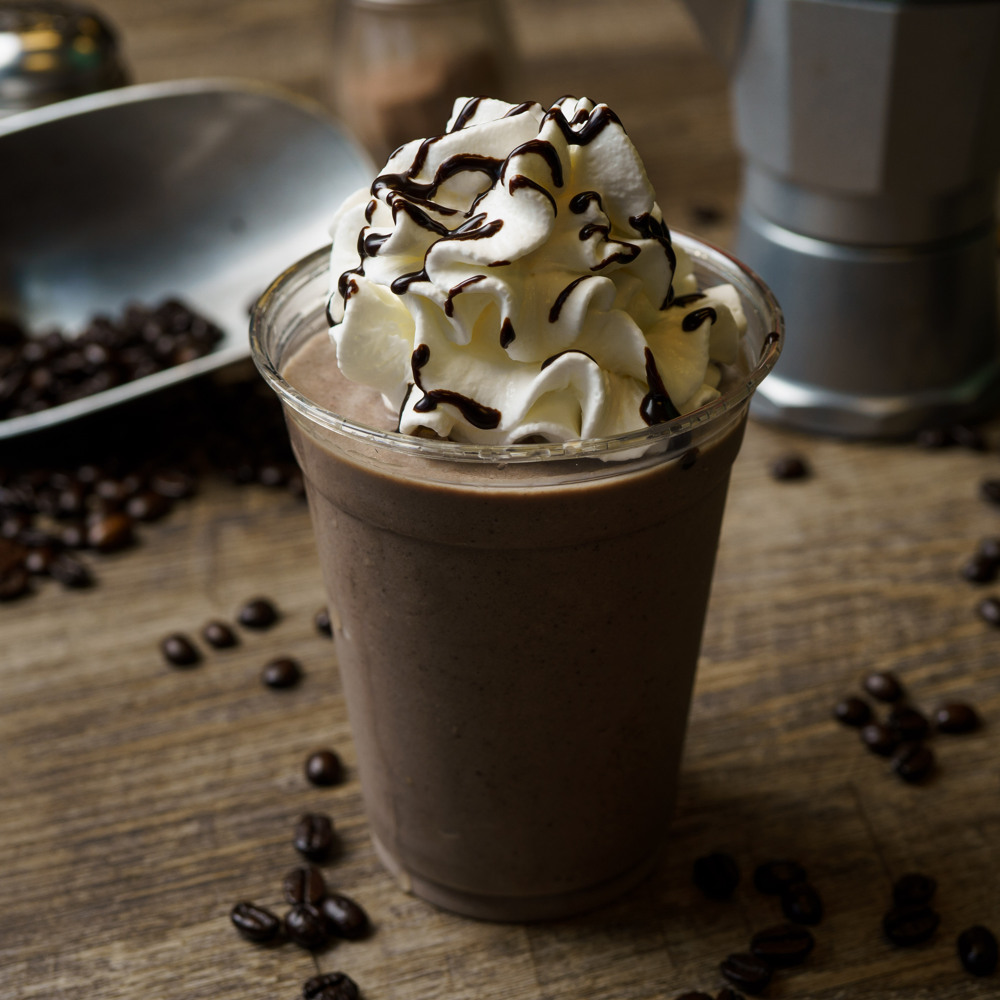

FRAPPUCCINO
A Frappuccino is a blended and chilled coffee beverage that has become synonymous with refreshing indulgence. Originating from Starbucks, the term "Frappuccino" combines "frappe" (a term used for iced beverages) and "cappuccino," reflecting its combination of coffee and creamy elements. This iconic drink is known for its icy texture, flavorful variations, and customizable options. The preparation of a Frappuccino typically involves blending coffee, milk, ice, and flavorings such as syrups or sauces. The result is a frosty, slushy concoction that marries the bold flavors of coffee with a velvety, smooth consistency. Varieties of Frappuccinos abound, featuring diverse flavorings like caramel, mocha, vanilla, or seasonal options, often topped with whipped cream for an extra layer of decadence. What sets the Frappuccino apart is its versatility. It caters to a wide range of tastes, allowing customization in terms of sweetness level, milk choices, and additional ingredients. Non-coffee versions, known as "cream-based" Frappuccinos, are also popular, offering the same blended and chilled experience without the espresso kick. Frappuccinos are especially popular during warmer seasons, offering a cool and satisfying alternative to hot coffee drinks. They have become a staple in the coffee culture, celebrated for their convenience, refreshing nature, and the ability to transform a classic coffee beverage into a delightful frozen treat. Whether enjoyed as a treat on a sunny afternoon or as an energizing pick-me-up, the Frappuccino has earned its place as a beloved and iconic member of the blended coffee family, offering a delicious escape from the ordinary.